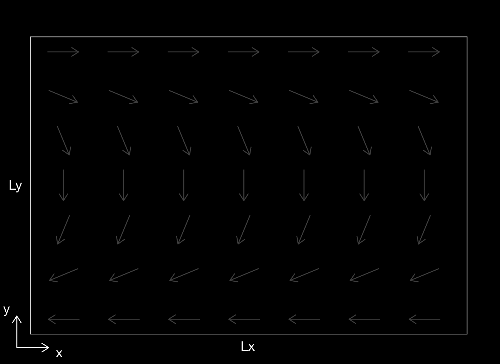

Cours 9#

Objectifs du cours#
Retour sur les conditions initiales
Problème d’advection-diffusion-réaction en 2D
Advection non uniforme
Discrétisation du terme d’advection en 2D (cas général)
Discrétisation du terme de réaction
Conditions de stabilité
Retour sur les conditions initiales#
Nous avons vu que la fonction np.meshgrid peut être très utile pour l’initialisation de variables. Par exemple, le code suivant définit une matrice d dont les valeurs sont le nombre de cellules distantes du centre ((5, 3)). Ensuite, on attribue la valeur 1 aux éléments qui sont à moins de 1 du centre, les autres étant laissés à 0. Cela peut être utile pour définir une pollution localisée dans une région.
Lx = 10 ; nx = 11
Ly = 3 ; ny = 4
x = np.linspace(0,Lx,nx)
y = np.linspace(0,Ly,ny)
X, Y = np.meshgrid(x, y)
C = np.zeros((ny,nx))
d = np.maximum(np.abs(X - 5) , np.abs(Y - 2))
C[d <= 1 ] = 1
Résultat du code précédent#
>>> X
array([[0., 1., 2., 3., 4., 5., 6., 7., 8., 9., 10.],
[0., 1., 2., 3., 4., 5., 6., 7., 8., 9., 10.],
[0., 1., 2., 3., 4., 5., 6., 7., 8., 9., 10.],
[0., 1., 2., 3., 4., 5., 6., 7., 8., 9., 10.]])
>>> Y
array([[0., 0., 0., 0., 0., 0., 0., 0., 0., 0., 0.],
[1., 1., 1., 1., 1., 1., 1., 1., 1., 1., 1.],
[2., 2., 2., 2., 2., 2., 2., 2., 2., 2., 2.],
[3., 3., 3., 3., 3., 3., 3., 3., 3., 3., 3.]])
>>> d
array([[5., 4., 3., 2., 2., 2., 2., 2., 3., 4., 5.],
[5., 4., 3., 2., 1., 1., 1., 2., 3., 4., 5.],
[5., 4., 3., 2., 1., 0., 1., 2., 3., 4., 5.],
[5., 4., 3., 2., 1., 1., 1., 2., 3., 4., 5.]])
>>> C
array([[0., 0., 0., 0., 0., 0., 0., 0., 0., 0., 0.],
[0., 0., 0., 0., 1., 1., 1., 0., 0., 0., 0.],
[0., 0., 0., 0., 1., 1., 1., 0., 0., 0., 0.],
[0., 0., 0., 0., 1., 1., 1., 0., 0., 0., 0.]])
Champs de vitesse 2D non uniforme#

Dans ce cours, le champ de vitesse \((V_x,V_y)\) est arbitraire (non nécessairement uniforme ou constant), comme l’illustre cette figure. Notons que pour la résolution numérique, il sera nécessaire que Vx ait une taille (ny,nx-1) tandis que Vy ait une taille (ny-1,nx), puisque Vx multiplie \(\frac{\partial C}{\partial x}\).
Définition du champs de vitesse 2D#
La figure précédente représente un courant marin avec une vitesse constante orienté selon un angle \(\theta\) qui change linéairement de 0° en haut à 180° en bas: $\( \begin{eqnarray} V_x &=& \cos \left( \theta \right) \ V, \label{vxq3}\\ V_y &=& -\sin \left( \theta \right) \ V. \label{vyq3} \end{eqnarray} \)$
Voila le code qui permet de définir les champs de vitesses en Python:
V = 1 # m/s
Vx = np.zeros((ny, nx-1)) # velocity along x, taille (ny,nx-1)
Vy = np.zeros((ny-1, nx)) # velocity along y, taille (ny-1,nx)
X, Y = np.meshgrid(x, y)
theta = (1 - Y / np.max(Y)) * 180 # angle en degree
Vx = np.cos(np.radians((theta[1:, :]+theta[:-1, :]) / 2)) * V # taille (ny,nx-1)
Vy = -np.sin(np.radians((theta[:, 1:]+theta[:, :-1]) / 2)) * V # taille (ny-1,nx)
Equation d’avection-diffusion-réaction 2D#
En ajoutant un dernier terme de réaction aux équations d’advection-diffusion, nous ajoutons un terme de force (ou forçage)qui nous permet (dans le cas de la concentration) d’ajouter un contrôle de dégradation. Les équations deviennent :
ou \(\gamma\) est une constante de dégradation.
Comme avant, nous traiterons les termes d’advection, de diffusion et de réaction indépendamment pour les résoudre en appliquant la méthode de splitting.
Traitement de advection non uniforme#
Il faut construire un schéma numérique qui permette d’adapter la direction du flux d’advection en fonction du signe des vitesses en \(x\) et \(y\).
Par exemple, on teste si la vitesse est positive ou négative dans la direction \(x\) et, comme dans le cas 1D, on fait la mise à jour sur les indices
:-1ou1::
dCdta_xn = - (Vx < 0) * Vx * (C[:,1:] - C[:,:-1]) / dx # taille (ny,nx-1)
C[:,:-1] += dt * dCdta_xn # taille (ny,nx-1)
dCdta_xp = - (Vx > 0) * Vx * (C[:,1:] - C[:,:-1]) / dx # taille (ny,nx-1)
C[:,1:] += dt * dCdta_xn # taille (ny,nx-1)
où les matrices (de booléens) Vx < 0 et Vx > 0 sont expliquées au slide suivant.
On fait la même chose dans la direction \(y\) en travaillant selon l’axe 0 avec
Vy,dCdta_yn,dCdta_yp,dyà la place deVx,dCdta_xn,dCdta_xp,dx.
Illustrations des matrices de booléens#
Si Vx est une matrice arbitraire (représentant les composantes en \(x\) du champ de vitesse), alors les matrices Vx < 0, Vx > 0 ou Vx == 0 (de la même taille que Vx) sont remplies de 0 ou 1 selon que la condition est remplie ou non:
Vx Vx>0 Vx<0 Vx==0
2 3 2 3 4 5 1 1 1 1 1 1 0 0 0 0 0 0 0 0 0 0 0 0
1 2 1 2 3 4 1 1 1 1 1 1 0 0 0 0 0 0 0 0 0 0 0 0
0 1 0 1 2 3 0 1 0 1 1 1 0 0 0 0 0 0 1 0 1 0 0 0
-1 0 -1 0 1 2 0 0 0 0 1 1 1 0 1 0 0 0 0 1 0 1 0 0
-2 -1 -2 -1 0 1 0 0 0 0 0 1 1 1 1 1 0 0 0 0 0 0 1 0
-3 -2 -1 -2 -1 0 0 0 0 0 0 0 1 1 1 1 1 0 0 0 0 0 0 1
Note : En fait, ces matrices sont remplies de “booléens”, c’est-à-dire True ou False, mais Python les interprète en 1 ou 0.
Discrétisation du terme de réaction#
Comme en 1D, le terme de réaction ne pose aucun problème puisqu’il ne fait intervenir aucune dérivée :
dCdt_r = - gamma * C
C += dt*dCdt_r
Ainsi, pour le terme de réaction, la mise à jour s’applique sur tout le vecteur, il n’y a pas de problème de dimensions.
Condition de stabilité#
La méthode numérique est stable seulement si le pas de temps est assez petit.
D’aprés la théorie, définir le pas de temps
assure la stabilité de la méthode.